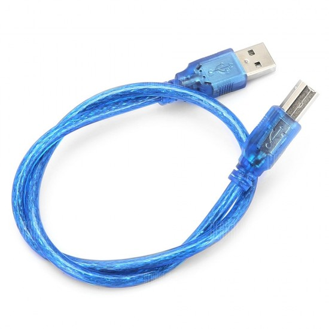
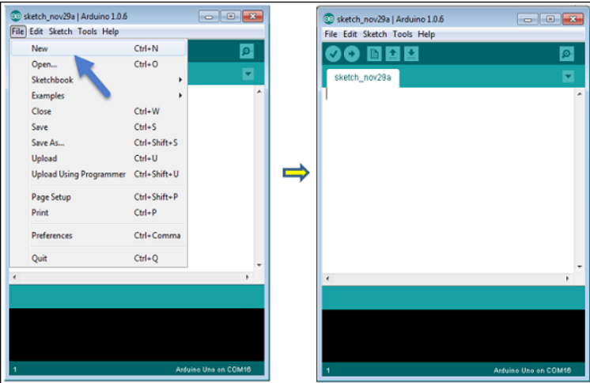
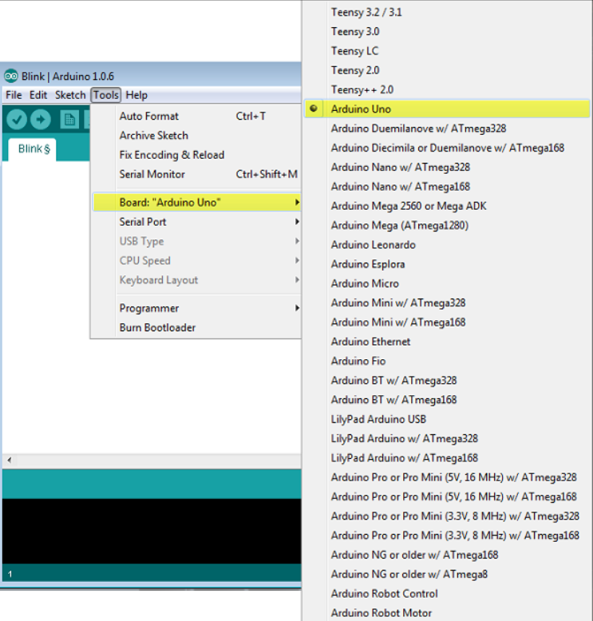
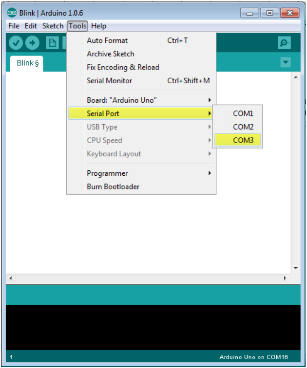
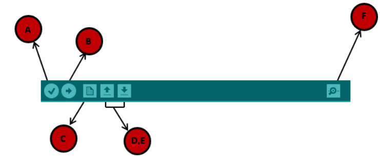

Installation¶
In this section, we will learn in easy steps, how to set up the Arduino IDE on our computer and prepare the board to receive the program via USB cable. After learning about the main parts of the Arduino UNO board, we are ready to learn how to set up the Arduino IDE. Once we learn this, we will be ready to upload our program on the Arduino board.
In this section, we will learn in easy steps, how to set up the Arduino IDE on our computer and prepare the board to receive the program via USB cable.

- Step 1
First you must have your Arduino board (you can choose your favorite board) and a USB cable. In this case you use Arduino UNO you will need a standard USB cable (A plug to B plug), the kind you would connect to a USB printer as shown in the above image.
- Step-2-Download Arduino IDE Software.
You can get different versions of Arduino IDE from the Download page on the Arduino Official website. You must select your software, which is compatible with your operating system (Windows, IOS, or Linux). After your file download is complete, unzip the file.
- Step 3 − Power up your board.
The Arduino Uno, Mega, Duemilanove and Arduino Nano automatically draw power from either, the USB connection to the computer or an external power supply. If you are using an Arduino Diecimila, you have to make sure that the board is configured to draw power from the USB connection. The power source is selected with a jumper, a small piece of plastic that fits onto two of the three pins between the USB and power jacks. Check that it is on the two pins closest to the USB port.
Connect the Arduino board to your computer using the USB cable. The green power LED (labeled PWR) should glow.
- Step 4 − Launch Arduino IDE.
After your Arduino IDE software is downloaded, you need to unzip the folder. Inside the folder, you can find the application icon with an infinity label (application.exe). Double-click the icon to start the IDE.
- Step 5 − Open your first project.
Once the software starts, you have two options −
- Create a new project.
- Open an existing project example.
To create a new project, select File → New. 
To open an existing project example, select File → Example → Basics → Blink. Open Project
Here, we are selecting just one of the examples with the name Blink. It turns the LED on and off with some time delay. You can select any other example from the list.
- Step 6 − Select your Arduino board.

Here, we have selected Arduino Uno board according to our tutorial, but you must select the name matching the board that you are using.
- Step 7 − Select your serial port.

- Step 8 − Upload the program to your board.
Before explaining how we can upload our program to the board, we must demonstrate the function of each symbol appearing in the Arduino IDE toolbar. 
-
A − Used to check if there is any compilation error.
-
B − Used to upload a program to the Arduino board.
-
C − Shortcut used to create a new sketch.
-
D − Used to directly open one of the example sketch.
-
E − Used to save your sketch.
-
F − Serial monitor used to receive serial data from the board and send the serial data to the board.
Now, simply click the “Upload” button in the environment. Wait a few seconds; you will see the RX and TX LEDs on the board, flashing. If the upload is successful, the message “Done uploading” will appear in the status bar.